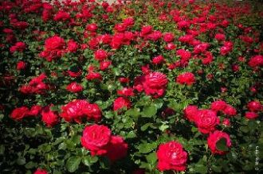

Зажигается свет,Ночью в окнах рассвет,Я читаю в них знаки.Город жжет фонари,И такси и ноль три,Все готовы к атаке.
I want you to breathe meLet me be your airLet me roam your body freelyNo inhibition, no fear
Be still my soulBe still my soulSoulBe still my soul
Расскажи мне всё, сны уходят в никуда,И слова текут как под пальцами вода..Я смотрю на дождь, он обманывает нас
There's a reason you're everywhereBreathe you in like you're in the airMaybe you should call off the dayGive your girl some time to play
Кохання-це…
Кохання – це прекрасна казка,
Без краю казка без кінця,
Даже если, не ответишь. Лучше слов глаза мне говорят. Я отдам, всё на свете. За один твой мимолётный взгляд. С твоим фото, на футболке.
Она вся соткана из нот, как будто. Глаза в глаза и всё распалось на минуты.Глаза в глаза и больше ничего не надо. Еще мгновение, еще немного рядом.
Yeah
[Brian:]You are my fireThe one desireBelieve when I sayI want it that way
Half past twelveAnd I'm watching the late show in my flat all aloneHow I hate to spend the evening on my ownAutumn winds
Когда выходишь ты всего на пять минут, Мне кажется, что это навсегда. Я на тебя смотрю в окно, но все равно Я знаю, что минуты эти врут.
[Chorus: Robin Thicke]I don't like it, I love it, love it, love it, uh ohSo good it hurtsI don't want it, I gotta, gotta have it, uh oh
[Francesco Yates:]OooooohOooooohOooooohOh baby!OooooohOooooohHeeeey...
Sha-la-la-laSha-la-la-laSha-la-la-la
Знаешь, это признаки любви,Если между нами притяженье.В зеркалах - сознанья отраженье.Из мечты -Только Ты,Только Ты.

小さな家とキャンバス 他には何もない貧しい絵かきが女優に恋をした大好きなあの人に バラの花をあげたいある日街中の バラを買いました百万本のバラの花をあなたに あなたに あなたにあげる窓から 窓から 見える広場を真っ赤なバラで うめつくして
장미의 미소한두번도 아닌데그대를 만날때면자꾸만 말문이 막혀서담배만 피워댔죠이제야 그대에게사랑한단 말대신한송이 새빨간 장미를두손모아 드려요새빨간 장미만큼그대를 사랑해
I threw a wish in the wellDon't ask me I'll never tellI looked at you as it fellAnd now you're in my way
[Rihanna]Yellow diamonds in the lightAnd we're standing side by sideAs your shadow crosses mineWhat it takes to come alive
You think I'm pretty, without any make-up onYou think I'm funny, when I tell the punchline wrongI know you get me, so I let my walls come downDown